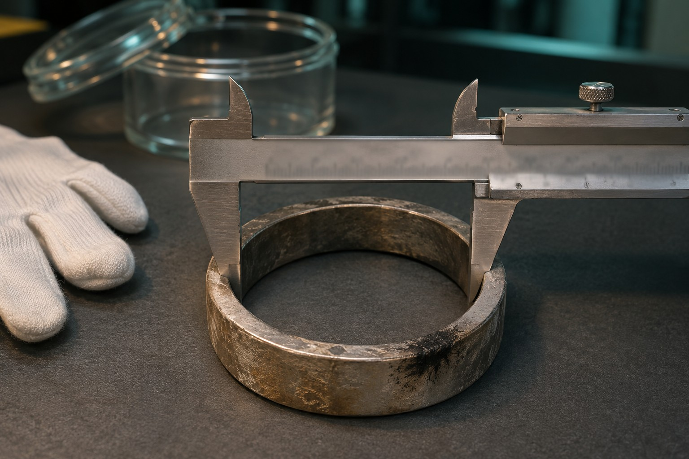
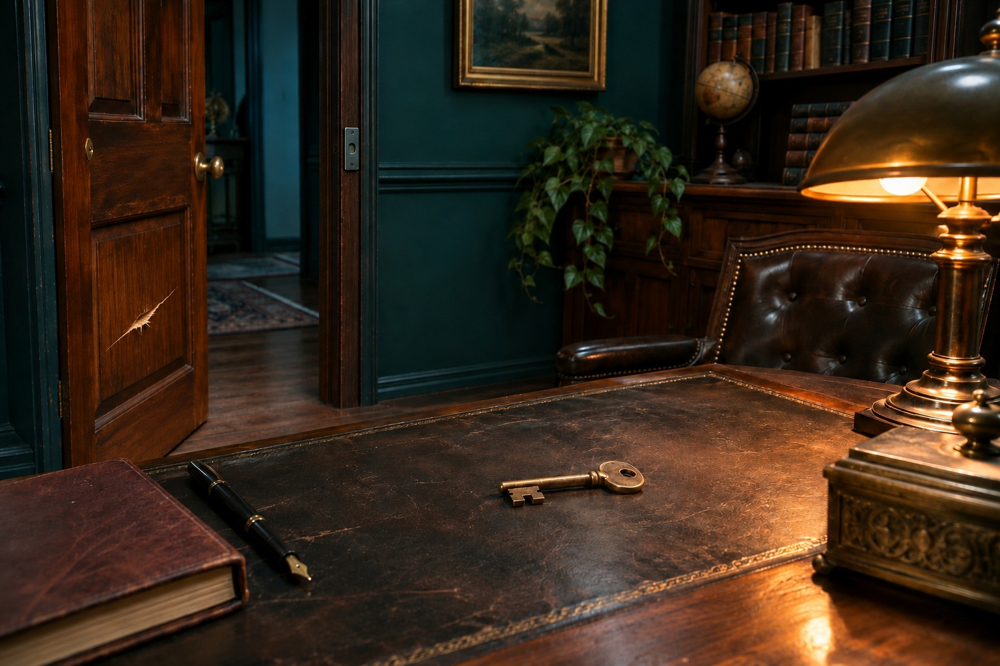
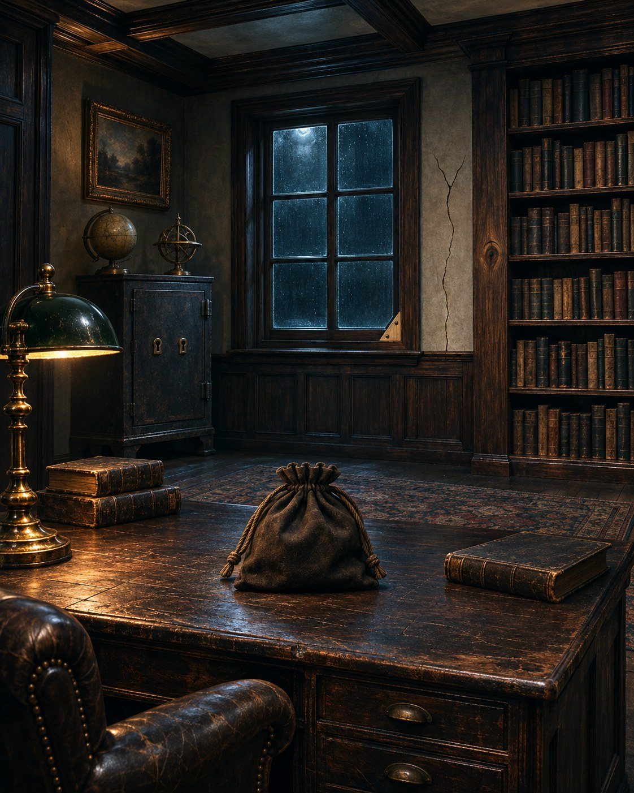

赤い糸の先 ／ 第七話
同じ部屋の別の窓
「拾ったときの写真にしては、ずいぶんよく見えるね」
水城が言うと、瀬尾は輪の回収票を抜いた。発表の写真は、回収したあと、鑑定のために持ち上げたところだった。台紙の番号も、現場の記録よりあとのものだ。

同じ「発見時」の表示が付いた書斎の写真にも、食い違いがあった。担当捜査員は入室してから撮ったと記録している。机の鍵が写真に見えることには、入室前の状態を証明する力はなかった。

係長は最終報告の添付をもう一度開いた。「だったら、これも写真の下の一行から調べ直そう。場所は分かるか」
誰も答えなかった。水城は書斎の赤い傘を見ないようにして、その手前を見た。窓枠の下に、小さな三角の補修がある。すぐ横の壁には、上で二つに分かれた傷が走っていた。男の右後ろの棚には、板の節が一つ見えた。
「部屋だけで探します。机の上は隠して」
瀬尾が紙を一枚渡した。水城はその角を男の肩に当て、窓枠が隠れないところまで紙を斜めにずらした。男も、机の上の封筒も隠れた。窓の下に三角の継ぎ目が残った。水城は目録を引き寄せ、さっき見た収集家の書斎の頁を開いた。
収集家の書斎の写真に、似た三角の木片があった。もう一冊、祖父の書斎が出てくる事件の資料を開くと、そこにも壁の傷が写っていた。ただしカメラの向きが違う。水城は二枚を横に並べて、傷の先を指でたどった。


窓の補修、枝分かれした傷、棚板の節。机の角度が違っても、三つは同じ位置関係にあった。
「書斎は同じです。誰がいつ使っていたかは、これだけでは分かりません」
係長は二件の写真番号を控え、報告資料の保管担当に電話した。
「最終報告に使った資料の中に、このどちらかがありませんか」
しばらくして電話が戻った。係長は「その一枚だけですか」と聞き、鉛筆を置いた。
「では、保存されている一式をお願いします」
瀬尾はファイルを開く前に、水城の指の下の紙を取り上げた。写真の男がまた現れた。
「次は、部屋に何が置いてあったかだね」
水城は未加工と記された写真を開いた。写っていた机の前には、誰も立っていなかった。